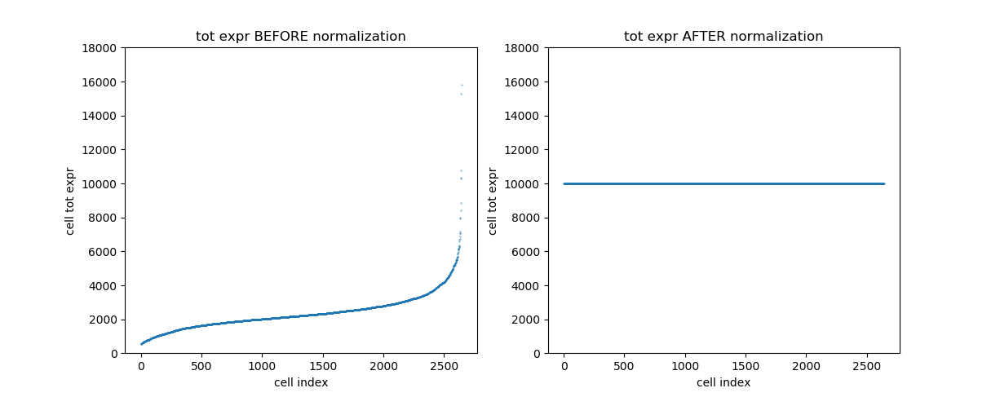
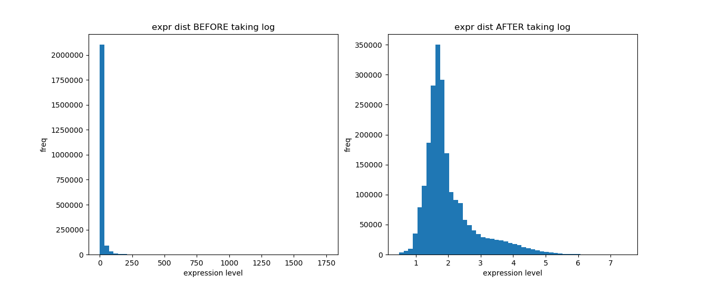
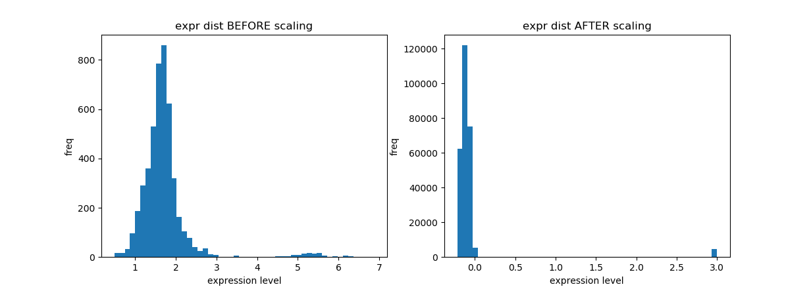
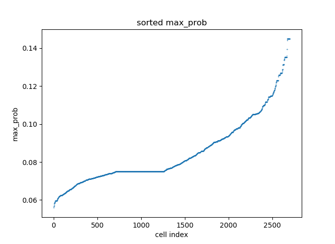
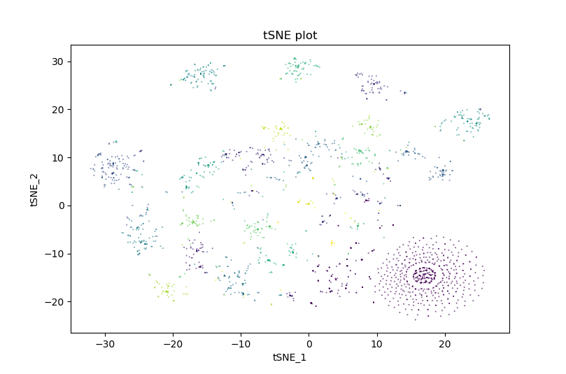

In this tutorial, we will perform an entire desc analysis with a dataset of Peripheral Blood Mononuclear Cells (PBMC). In the dataset, the expression levels of 2,700 cells were sequenced using the Illumina NextSeq 500. The data is freely available from 10X Genomics and the raw can be downloaded here.
0 Import python modules
In the tutorial, we will need desc module for clustering analysis and scanpy for data preprocessing.
import desc
import scanpy.api as sc
1 Import data
The current version of desc works with a AnnData object. AnnData stores a data matrix .X together with annotations of observations .obs, variables .var and unstructured annotations .uns. The desc package provides 3 ways to prepare an AnnData object for the following analysis:
1.1 Start from a 10X dataset
The desc package provides a function to load the 10X dataset directly. Download the data and unzip it. Then put everything in filtered_gene_bc_matrices/hg19/ to data/pbmc/.
# load the 10X data by providing the path to data
adata = desc.read_10X(data_path='data/pbmc')
1.2 Start from .mtx and .csv files
When the expression data doesn’t follow the standard 10X dataset format, we can manually import the data as follows:
Read the expression matrix from .mtx file.
import pandas as pd
adata = desc.utilities.read_mtx('data/pbmc/matrix.mtx').T
Read the .csv file for gene annotations. Make sure the gene names are unique.
genes = pd.read_csv('data/pbmc/genes.tsv', header=None, sep='\t')
adata.var['gene_ids'] = genes[0].values
adata.var['gene_symbols'] = genes[1].values
# Make sure the gene names are unique
var_names = genes[1]
var_names.is_unique
var_names = desc.utilities.make_index_unique(pd.Index(var_names))
adata.var_names = var_names
Read the .csv file for cell annotations.
cells = pd.read_csv('data/pbmc/barcodes.tsv', header=None, sep='\t')
adata.obs['barcode'] = cells[0].values
adata.obs_names = cells[0]
1.3 Start from a .h5ad file
Or load a previously saved AnnData object:
adata = desc.read_h5ad('data/pbmc.h5ad')
For more ways to create AnnData objects, please check here
2 Preprocessing
The standard scRNA data preprocessing workflow may include filtration of cells/genes, normalization, scaling and selection of highly variables genes. In this tutorial, we use scanpy to preprocess the data. Note that among the preprocessing steps, filtration of cells/genes and selecting highly variables genes are optional while normalization and scaling are strictly required before the desc analysis.
Following steps show a topical pre-processing procedure for the human blood cells data:
2.1 Filtering cells and genes
Typing adata in the python console shows that the original datasets contain expressions for 2700 gene across 32738 cells.
>>> adata
AnnData object with n_obs × n_vars = 2700 × 32738
obs: 'barcode', 'n_genes'
var: 'gene_ids', 'gene_symbols', 'n_cells'
Let us remove cells with very few expressed genes, as well as genes are lowly expressed, using the function provided by scanpy.
sc.pp.filter_cells(adata, min_genes=200)
sc.pp.filter_genes(adata, min_cells=3)
A relatively high expression of mitochondria genes indicating a lower data quality in scRNA data. Therefore, we want to also remove cells with a high proportion of mitochondria genes expression.
import numpy as np
# look for mitochondria genes which are started by 'MT'
mito_genes = adata.var_names.str.startswith('MT-')
# Get the mitochondria gene expression proportion
adata.obs['percent_mito'] = np.sum(adata[:, mito_genes].X, axis=1).A1 / np.sum(adata.X, axis=1).A1
# Keep only cell with a low mitochondria expression
adata = adata[adata.obs['percent_mito'] < 0.05, :]
After filteration, we ahve 13714 cells left in the dataset.
>>> adata
AnnData object with n_obs × n_vars = 2700 × 13714
obs: 'barcode', 'n_genes'
var: 'gene_ids', 'gene_symbols', 'n_cells'
2.2 Normalization
The function normalize_per_cell normalizes the gene expression measurements for each cell by the total expression, multiplies this by a scale factor (10,000 by default).
desc.normalize_per_cell(adata, counts_per_cell_after=1e4)
The figure shows the sorted totoal expression level for each cell before/after the normalization procedure. 
2.3 logarithm transformation
Also, the following analysis and the desc analysis should be performed on log-scaled data.
desc.log1p(adata)
The figure shows a histogram of expression levels before/after logarithm transformation. 
2.4 Selection of highly variable genes
The desc analysis should be performed on a particular set of genes, like highly variable genes, known cell-type markers or a combination of both, which help to separate cell groups. The function highly_variable_genes can help to select a set of the highly variable gene while controlling for the relationship between variability and average expression level. The function is also from scanpy. Check the function document for detailed information about usage and parameter setting.
For reducing the compuation cost in the tutorial, we use top 100 highly variable genes in the pbmc data for the following analysis:
n_top_genes = 100
desc.highly_variable_genes(adata, n_top_genes=n_top_genes, subset=True)
2.4 Scaling
desc.scale(adata, zero_center=True, max_value=3)
The figure shows histogram of expreesion levels befter/after scaling. 
3 Desc analysis
Now we are ready to run a desc analysis. The function train will perform desc on the expression matrix (2700 x 100 in this tutorial) and save the clustering labels as well other results in the AnnData object. For a full list of desc parameter please check the desc documentation on the pypi.
adata = desc.train(adata, dims=[int(n_top_genes), 32, 8], resolution=0.4, tol=0.01)
After the desc model training, several result slots will be added to the adata:
- adata.obs[‘ident’]
This slot is the clustering labels from the desc. The size of the ‘ident’ is number of the cell by one (2700 x 1 in this tutorial). One may want to check the number of cell for each of the clusters by:for i in set(adata.obs['ident']): print(i, adata.obs['ident'].tolist().count(i)) -
adata.obsm[‘prob’].
This slot contains the probabilties of each cell belongs to each of the cell clusters. The size should be numbers of cell by numbers of clusters (2700 x ?? in this tutorial) - adata.obs[‘max_prob’].
This slot contains the probabilities of each cell belongs to the assigned cluster. The size is number of the cell by one (2700 x 1 in this tutorial). A reliable assignment should base on a relatively high max_prob. Let us check max_prob for all cells using a scatter plot.
max_prob = adata.obs['max_prob'].tolist()
max_prob.sort()
plt.scatter(list(range(len(max_prob))), max_prob, s=0.1)
plt.title('sorted max_prob')
plt.xlabel('cell index')
plt.ylabel('max_prob')

- adata.obsm[‘embedded’]
This slot is a low dimension representation of the expression data. the size is number of the cell by the number of network nodes in the lowest layer (2700 x 8 in this tutorial). This slot facilitates users to generate tSNE plot or do other downstream analysis.
4 Visualization
Next, let us visualize the desc clustering using a tSNE plot:
tsne = desc.run_tsne(data=adata, n_jobs=8, perplexity=50, learning_rate=500)

Note that the tun_tsne function in the desc package is a warpper fo the MulticoreTSNE. The tSNE visualization can be quite depend on the parameter settings. Thus, we suggest to run run_tsne under a grid of parameter settings to get a optimal visualization. To know more about tNSE paramter, please check here.
5 Save result
Lastly, let us save the desc result for the further analysis:
5.1 Save to a .h5ad file
The AnnData object can be save to a .h5ad file for further analysis in Python enviroument.
adata.write('../result/desc_result.h5ad')
5.2 Save to .csv files
Also, the desc result can be separatly save to .csv files, which can be easily accessed using R, c or other tools for future analysis.
desc.write_desc_result(data=adata, save_dir='tmp_result')
The function will generate 3 files including cluster_ident.cvs, prob_matrix.cvs and embedded.cvs, which conresponding to adata.obs[‘ident’], adata.obsm[‘prob’]. and adata.obsm[‘embedded’].